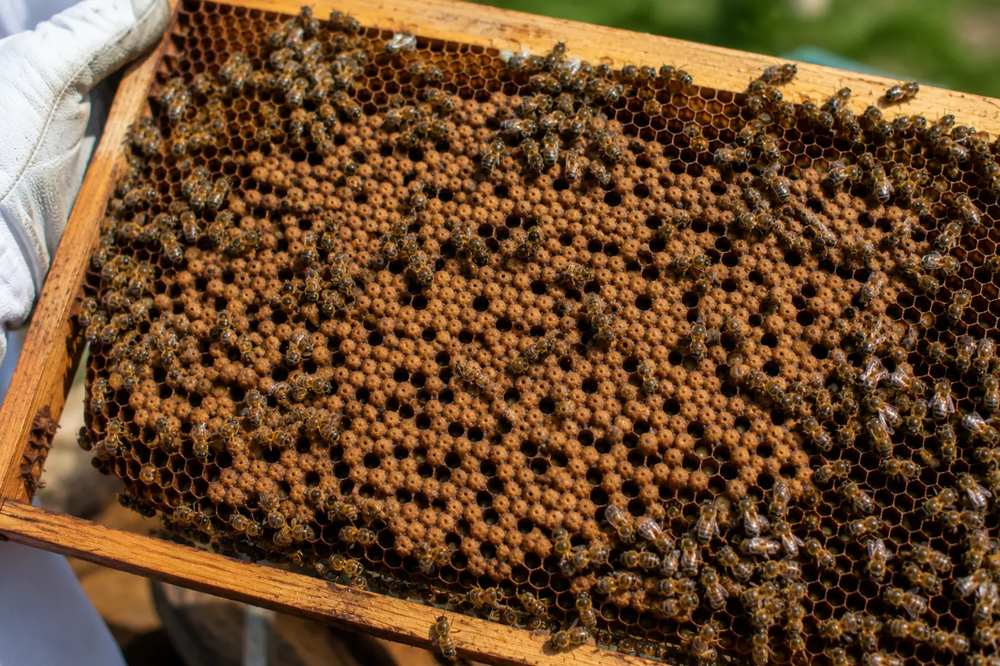
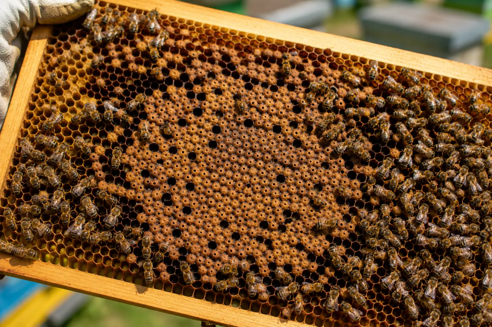
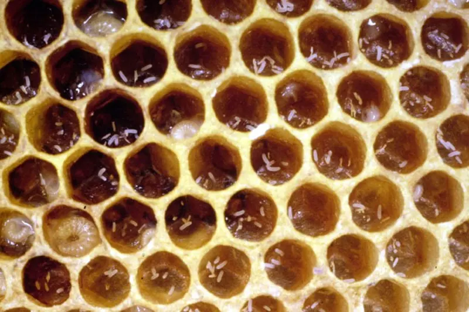

Bee behaviour and queen checks
Why Are There So Many Drones in My Hive?
Last updated: 1 May 2026

Seeing lots of drones in a hive can be completely normal, especially in spring and early summer. Drones are male honey bees, and strong colonies produce them when the season is suitable for mating virgin queens.
The concern is not simply the number of drones. The real question is whether drone production is balanced with healthy worker brood. A strong colony with plenty of worker brood and some drone brood is usually behaving normally. A weakening colony producing mostly or only drones needs closer investigation.
This guide explains when drones are normal, when they may point to queen failure, and how to distinguish normal drone brood from a drone-laying queen or laying workers.
When lots of drones is normal
In spring and early summer, drone numbers naturally increase. Colonies produce drones so virgin queens from the wider area can mate. This is part of normal colony reproduction and is often seen during the build-up to swarm season.
Drone brood usually has domed, bullet-shaped cappings. In a healthy colony, this drone brood is seen alongside good worker brood, eggs, larvae, stores and a growing adult bee population.
If the colony is strong, queenright, building up well and has a balanced brood pattern, a large drone population is not usually a problem.
Seasonal drone patterns
Drone production is strongly seasonal. In spring, drone numbers rise as colonies prepare for the mating season. Through early and mid-summer, strong colonies may carry large drone populations.
In late summer and autumn, drones are usually reduced or expelled as colonies prepare for winter. By winter, most colonies have few or no drones. Seeing many drones outside the normal active season should prompt a queen and brood check.
A few seasonal differences are normal, but drone-heavy brood in a weakening colony is not something to ignore.
When lots of drones may signal a problem

Drone numbers become more concerning when there is little or no worker brood, the brood pattern is scattered, the colony is shrinking, or drones are emerging from worker-sized cells.
Multiple eggs in cells, eggs stuck to cell walls, messy brood and a colony with no clear queen may point towards laying workers. A neater pattern with one egg per cell but only drone brood may point towards a drone-laying queen.
A failing queen can sit between these patterns, producing mixed worker and drone brood while the colony gradually loses strength.
Drone-laying queen
A queen may become drone-laying if she runs out of stored sperm, was poorly mated, or was unable to mate properly. Because unfertilised eggs become drones, the colony may start producing drone brood where worker brood should be.
In many drone-laying queen cases, the eggs are still laid neatly, often one per cell, because a queen is still doing the laying. The problem is that the brood produced is male rather than worker brood, so the colony cannot replace its worker population properly.
Read more: Drone-laying queen explained.
Laying workers
Laying workers usually develop when a colony has been queenless for too long. Some workers begin laying unfertilised eggs, but they cannot mate, so the brood produced is drone brood.
The pattern is usually messy. You may see multiple eggs per cell, eggs on cell walls, scattered brood and drone brood in worker cells. The colony often becomes increasingly disorganised and difficult to correct.
Read more: Laying workers.
Failing queen
A failing queen may produce more drones than normal, especially if her laying becomes unreliable. You may see mixed worker and drone brood, a declining worker population, patchy brood and weaker colony build-up.
A failing queen is not always obvious from one inspection. Look for a trend over time. If the ratio of drone brood increases while worker brood falls, queen quality should be questioned.
Read more: Queen failing signs.
How to tell the difference
Normal drone production usually appears in a strong colony with plenty of worker brood. There may be obvious drone brood, but it is part of a balanced colony picture.
A drone-laying queen often gives a neater pattern because the queen is still laying, but the brood produced is mostly or entirely drones. Laying workers usually produce a much messier picture, with multiple eggs, poor placement and scattered drone brood.
A failing queen may show mixed signs. There may still be worker brood, but the colony may be declining and the brood pattern may become less reliable over time.
What should you do?

Start by checking eggs and brood carefully. Look for one egg per cell, egg placement, worker brood, drone brood, sealed pattern and whether the colony has enough young bees to recover.
Try to confirm whether a queen is present, but do not rely only on seeing the queen. Eggs, young larvae and brood pattern often tell you more than a brief queen sighting.
Compare the colony with nearby colonies if you have them. If all strong colonies are producing drones in spring, that may be normal. If one colony is drone-heavy and weakening while others are building well, investigate further.
When to take action
Action is needed if there is no worker brood, only drones are being produced, the colony is shrinking, or there is no sign of a viable queen. The right action depends on whether the issue is a drone-laying queen, laying workers, queenlessness or a failing queen.
A colony with a drone-laying queen may need requeening or combining. Laying workers are harder to correct and often need more careful handling. A failing queen may be replaced by the bees through supersedure, but intervention may be needed if the colony is declining quickly.
If unsure, use the Bee Health Checker or compare with the related queen guides before acting.
How HiveTag can help
Recording brood type, queen status and colony strength helps you spot increasing drone production before it becomes a major issue. HiveTag lets you note whether brood is worker, drone-heavy, patchy or absent across inspections.
A clear inspection history makes it easier to see whether drone production is seasonal and normal, or whether a colony is gradually moving towards queen failure or laying workers.
Learn more: HiveTag.
Drone Bee FAQ
Not always. High drone numbers are normal in spring and early summer. It becomes a problem when there is little or no worker brood, the colony is weakening, or drones are being produced from worker-sized cells.
A hive producing only drones usually indicates a drone-laying queen or laying workers. The brood pattern and egg placement help tell the difference.
Not necessarily. Drone production often increases before and during swarm season, but drones alone do not prove the colony is about to swarm.
Drone brood removal is sometimes used as part of varroa management, but excessive removal can disrupt normal colony function. It should not be used as the only varroa control method.